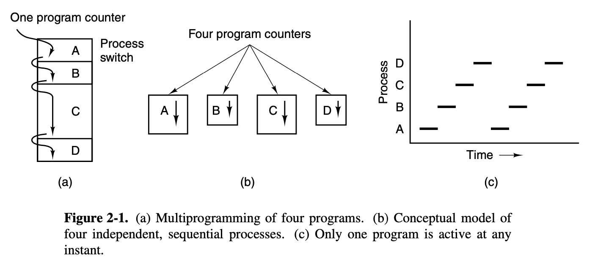

Operating Systems Design and Implementation Notes
1. Introduction to Processes
By Jiawei Wang
While, strictly speaking, at any instant of time, the CPU is running only one program, in the course of 1 second, it may work on several programs, thus giving the users the illusion of parallelism. called pseudoparallelism.
1. Sequential Processes
This model (Sequential Processes) that makes parallelism easier to deal with. 
Process vs Program:
- Process: A process is just an executing
programwith values ofprogram counter,registersandvariables. - Program: An algorithm expressed in some suitable notation.
Key Idea:
A process is an activity of some kind. It has a program, input, output, and a state.A single processor may be shared among several processes, with some scheduling algorithm being used to determine when to stop work on one process and service a different one.
2. Creation and Termination
A new process is created by having an existing process execute a process creation system call.
Creation -> fork()
-
After the
fork, the two processes, the parent and the child, have the same memory image the same environment strings, and the same open files. -
After a process is created both the parent and child have their own distinct address spaces. In short, The child’s initial address space is a copy of the parent’s, the child can read parent spaces' variables and program text, but no writable memory is shared.
Example: Codes/process.c
int main(int argc, char* argv[]) {
int x = 2;
int pid = fork();
if (pid == -1) {
return -1;
}
if (pid == 0) {
x++;
}
printf("Process id %d\n", getpid());
printf("x is equal to %d\n", x);
if (pid != 0) {
wait(NULL);
}
return 0;
}
❯ ./a.out
Process id 62895
x is equal to 2
Process id 62896
x is equal to 3
Termination
There are four principal events that cause processes to be created:
- System initialization.
- Execution of a process creation system call by a running process.
- A user request to create a new process.
- Initiation of a batch job.
3. Process Hierarchies
A process, its children, and further descendants together may form a process group. When a user sends a signal from the keyboard, the signal may be delivered to all members of the process group currently associated with the keyboard.
4. Process States
- Running (actually using the CPU at that instant).
- Ready (runnable; temporarily stopped to let another process run).
- Blocked (unable to run until some external event happens).

Process scheduler
Process scheduler is a part of the operating system.In my opinion, The core of Processes in OS, is the algorithms of process scheduler. The subject of scheduling—deciding which process should run when and for how long—is an important one. How to balance the competing demands of efficiency for the system as a whole and fairness to individual processes? Which is also the key of this hole chapter notes, we will talk about in the following notes.